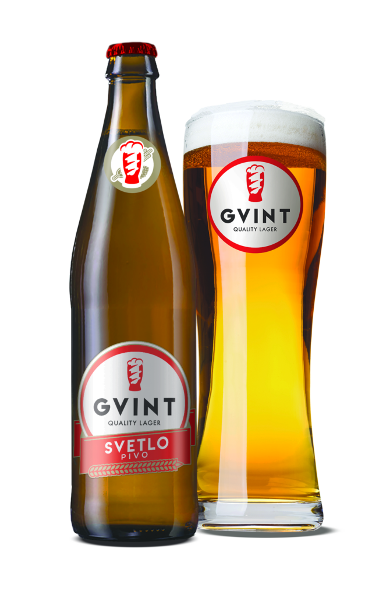
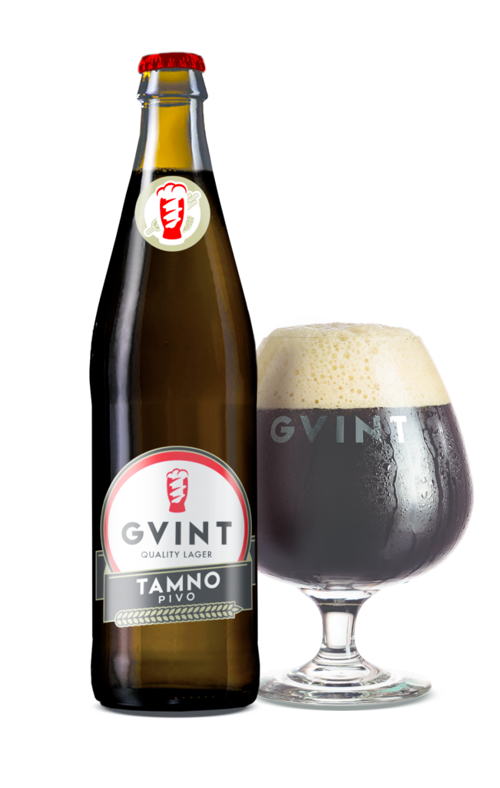
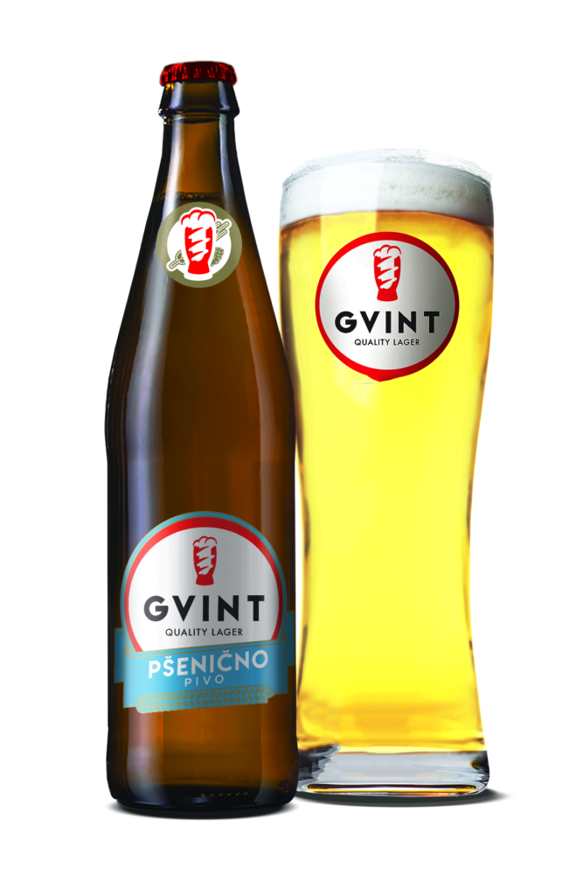

GVINT CLASSIC LAGER
We made a lager, that is somewhere between the Bavarian (heles) and Czech (pilsner),
with just enough barley malt and hops so that the beer has moderate aroma and bitterness. Our lager
is first settling in fermenters and then in conditioning tanks, which is the best way to get all the
necessary shades of beer and optimum foam. It has a golden color. It is best when cooled between 6-8
° C.

GVINT DARK
BEER
By combining light and
fried malt, we made the dark Gvint, with a slightly higher
percentage of
alcohol
and more extract than our light lager. Some say that in the dark lager, they could taste chocolate
or
coffee, it is certainly possible to recognize a more intense taste that the special malts give this
beer. Dark Gvint beer is served in glasses that are wider at the bottom and narrower at the top, so
that
the full taste and smell of beer is released at the right moment.

GVINT WHEAT BEER
The highest quality wheat malt is used in the production of wheat beer (Weissbier).
Wheat gives beer a soft, creamy flavor and a pale color, while special yeast gives a mild banana and
cloves flavor. We have made the best balance between different flavors, so that Gvint wheat beer is
both vibrant and refreshing. The wheat beer should be slowly poured into a tall glass, narrow at the
lower part and wider at the top.